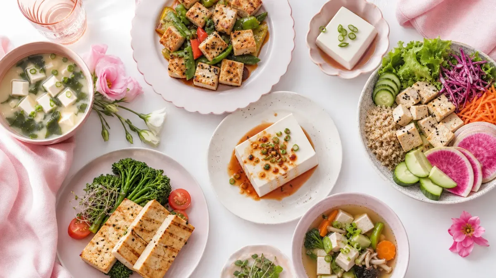

豆腐ダイエットレシピを始める前に知っておきたいこと
豆腐は木綿豆腐100gあたり約72kcal、絹ごし豆腐は約56kcalと低カロリー。さらにたんぱく質が100gあたり約5〜7g含まれており、食事の満足感を保ちながら食べられる食材です。
ダイエット中に不足しがちなたんぱく質を手軽に補えるため、食事管理の強い味方になります。まずは1週間、毎日の食事に1品取り入れることを目標にしてみましょう。
🥢 豆腐ダイエット活用ガイド｜栄養＆カロリー比較
木綿 vs 絹ごし｜どっちを選ぶ？
木綿豆腐
絹ごし豆腐
📊 よく使う食材とのカロリー比較（100gあたり）
※数値は文部科学省「食品成分データベース」をもとにした目安です
豆腐ダイエットレシピ7選｜朝・昼・夜別に紹介
毎日の食事に無理なく取り入れられるよう、朝・昼・夜のシーン別にレシピを厳選しました。調理時間は最短5分〜15分以内のものを中心に選んでいます。
【朝食】レシピ①：豆腐スムージー（5分）
絹ごし豆腐100g＋バナナ1/2本＋豆乳150ml＋はちみつ小さじ1をミキサーにかけるだけ。たんぱく質を朝から摂れる手軽な1杯です。
カロリーの目安：約180〜200kcal
【朝食】レシピ②：豆腐の和風スクランブルエッグ（10分）
木綿豆腐1/4丁（75g）を手でくずし、卵1個と混ぜてフライパンで炒めます。醤油小さじ1・かつお節をかければ完成。ご飯の代わりに食べると1食あたり約150kcalに抑えられます。
【昼食】レシピ③：豆腐チャンプルー（15分）
木綿豆腐1/2丁（150g）をしっかり水切りし、ゴーヤ・卵・かつお節と一緒に炒めます。塩・醤油で味付け。たんぱく質が豊富で昼食の満足感が高まります。
カロリーの目安：約220〜250kcal
【昼食】レシピ④：豆腐と野菜のサラダ丼（10分）
絹ごし豆腐1/2丁（150g）をご飯の上にのせ、トマト・きゅうり・ツナ（水煮）をトッピング。ポン酢をかけて完成。ご飯を100gに抑えれば約350kcalの満足ランチになります。
【夕食】レシピ⑤：豆腐の麻婆風（15分）
木綿豆腐1丁（300g）を2cm角に切り、鶏ひき肉50g・長ねぎ・にんにくと炒めます。鶏がらスープ・豆板醤・醤油で味付けし、水溶き片栗粉でとろみをつけて完成。
カロリーの目安：約280〜320kcal
【夕食】レシピ⑥：豆腐の味噌汁（5分）
絹ごし豆腐1/4丁・わかめ・ねぎを出汁で煮て、味噌を溶かすだけ。1杯約40〜60kcalで、夕食の汁物として毎日続けやすいシンプルレシピです。
【夕食】レシピ⑦：豆腐ステーキきのこあんかけ（15分）
木綿豆腐1/2丁をしっかり水切りし、フライパンで両面を焼きます。しめじ・えのきを炒め、だし醤油・みりんで作ったあんをかけて完成。食べ応えがあり、夕食のメインになります。
カロリーの目安：約180〜200kcal
豆腐レシピをもっと増やしたい方は、豆腐ダイエットレシピ15選｜1週間で試せる簡単メニューもあわせてご覧ください。
豆腐を1週間取り入れるプラン例
毎日すべてを変える必要はありません。まずは1日1食、豆腐を使ったメニューに置き換えることから始めましょう。
- 月・水・金：夕食のメインを豆腐ステーキや麻婆豆腐に変える
- 火・木：昼食に豆腐サラダ丼を取り入れる
- 土・日：朝食に豆腐スムージーを試す
このように週3〜5回のペースで取り入れるだけでも、食事全体のカロリーと脂質を自然に抑えやすくなります。
食事管理を習慣化したい方は、ダイエットレシピ1週間分｜朝昼晩の簡単献立プランも参考にしてみてください。
豆腐ダイエットを続けるための3つのポイント
① 水切りを丁寧にする
木綿豆腐はキッチンペーパーで包み、重しをのせて15〜20分水切りすると炒め物や焼き料理がべちゃっとせず、食べ応えが増します。
② 味付けを変えてマンネリを防ぐ
醤油・ポン酢・味噌・塩麹・ごまだれなど、ソースを変えるだけで同じ豆腐でも飽きにくくなります。週ごとに味付けをローテーションするのがおすすめです。
③ たんぱく質の目標量を意識する
体重50kgの方の場合、1日のたんぱく質目標は約50〜60g（体重×1〜1.2g）が目安とされています。豆腐1丁（300g）で約15〜21gのたんぱく質が摂れるため、他の食材と組み合わせて補いましょう。
Q. 豆腐は毎日食べても大丈夫ですか？
豆腐は大豆イソフラボンを含む食品です。内閣府食品安全委員会は、大豆イソフラボンの1日の摂取目安上限を70〜75mgとしています。豆腐1丁（300g）に含まれるイソフラボンは約75〜90mgのため、1日1/2丁〜1丁程度を目安にするとバランスよく取り入れられます。体の状態や持病がある方は、かかりつけの医師にご相談ください。
Q. 豆腐だけで食事を置き換えるのは効果的ですか？
豆腐だけに偏った食事は、脂質・炭水化物・ビタミン類が不足する可能性があります。豆腐はあくまで食事の一部として取り入れ、野菜・炭水化物・良質な脂質もバランスよく組み合わせることが大切です。1食まるごと置き換えるよりも、主菜や副菜の1品を豆腐に変えるアプローチが続けやすくおすすめです。
Q. 木綿豆腐と絹ごし豆腐、ダイエットにはどちらが向いていますか？
たんぱく質量を重視するなら木綿豆腐、カロリーを抑えたいなら絹ごし豆腐が向いています。木綿豆腐は食べ応えがあり腹持ちしやすいため、食事量を減らしたいときに活用しやすいです。絹ごし豆腐はスープや冷奴など調理の手間が少なく、忙しい日にも取り入れやすいのが特徴です。
食事管理の記事をもっと読みたい方は、食事管理の記事一覧もご覧ください。